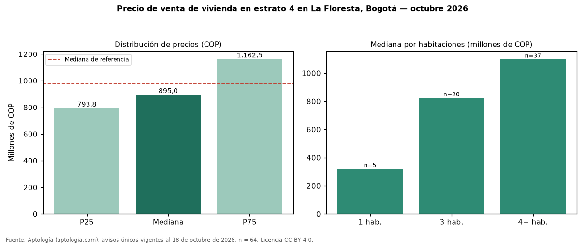

Precio de venta de vivienda en estrato 4 en La Floresta, Bogotá — octubre 2026
Con 64 avisos únicos, el precio mediano de vivienda en estrato 4 en venta en La Floresta, Bogotá es COP 895 millones. Eso es 8 % menos que la mediana de toda la oferta de venta en La Floresta (COP 975 millones). Por metro cuadrado, la mediana es COP 5.226.343/m² (−1 % frente a COP 5.263.158/m²). Por habitaciones: 1 habitación, COP 320 millones (n = 5); 3 habitaciones, COP 825 millones (n = 20); 4 o más habitaciones, COP 1,10 mil millones (n = 37). El área mediana es 180 m² (referencia: 183 m²). El 89 % de los avisos tiene al menos un parqueadero. El rango intercuartílico va de COP 794 millones a COP 1,16 mil millones (razón 1,5). Datos abiertos CC BY 4.0 de Aptología; fuente y búsqueda de inmuebles: https://www.aptologia.com/estrato-de/bogota/la-floresta. Archivos: PDF de 2 páginas, CSV con las cifras y gráfica PNG.

| Avisos únicos | 64 |
|---|---|
| Percentil 25 | COP 793.750.000 |
| Mediana | COP 894.995.000 |
| Percentil 75 | COP 1.162.500.000 |
| Mediana por m² | COP 5.226.342 |
Fuente: avisos vigentes de portales inmobiliarios recopilados por Aptología, deduplicados (mínimo 30 avisos únicos por celda). Precios pedidos, no cerrados. Fecha: 2026-10-18.